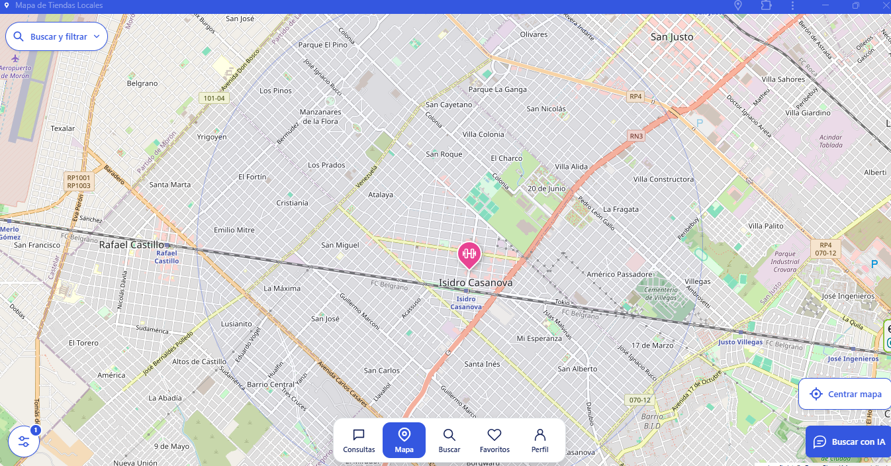
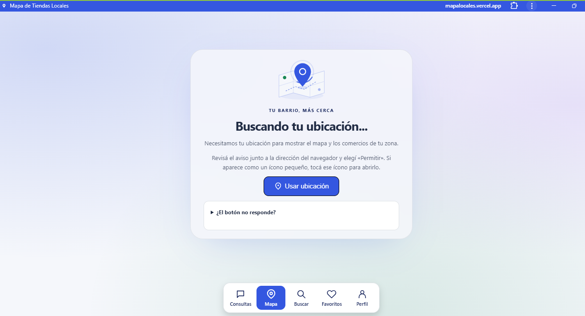
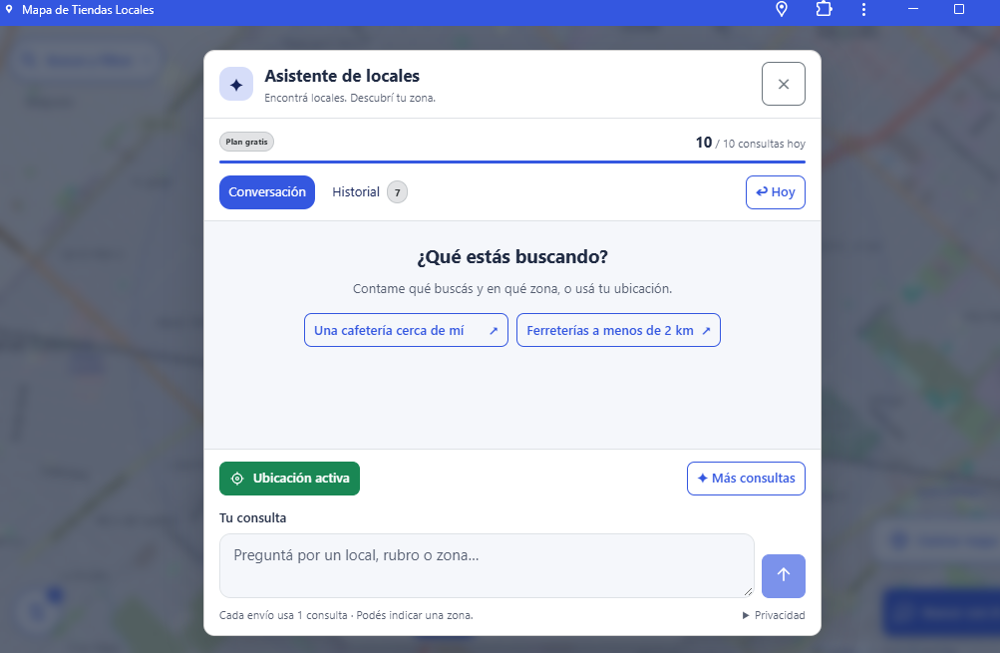
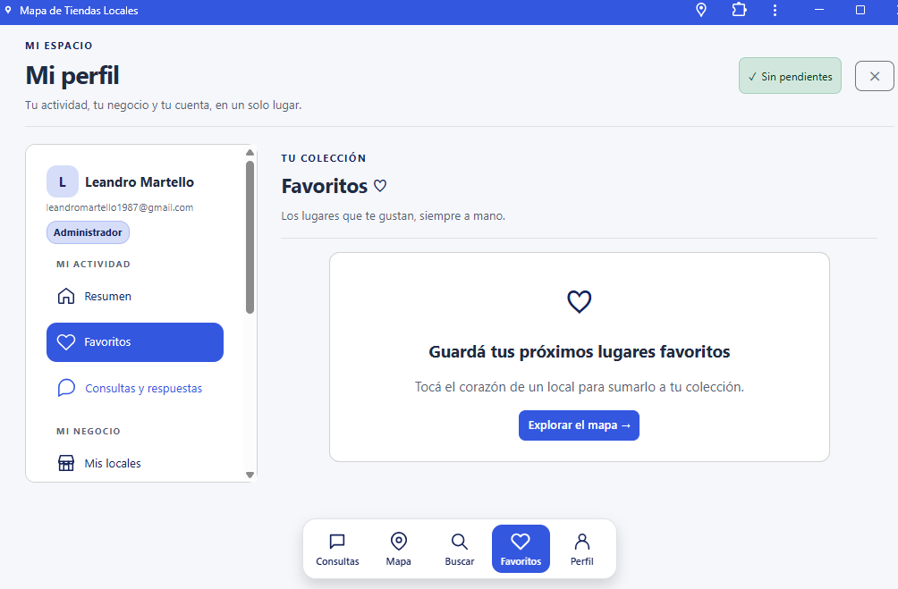
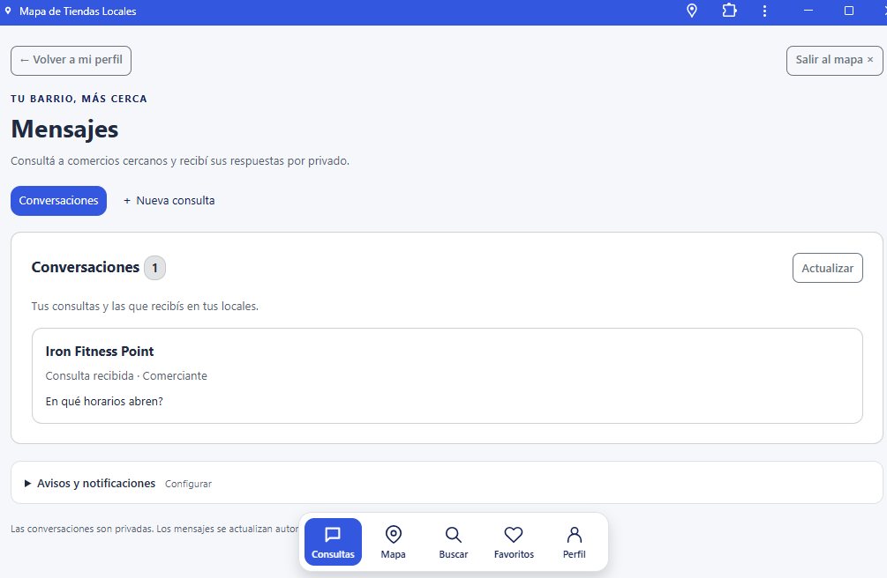

Tu zona en el mapa.
Usá tu ubicación para encontrar comercios cercanos y explorar con el buscador y los filtros.
Proyecto · Aplicación funcional
Encontrá comercios cercanos, guardá tus lugares favoritos y conectate con los negocios de tu zona desde una misma aplicación.
Aplicación disponible en Vercel · Se abre en otra pestaña

Descubrí lo que tenés cerca
Un proyecto que reúne la búsqueda de comercios, la exploración del mapa y el contacto con los negocios del barrio.
Usá tu ubicación para encontrar comercios cercanos y explorar con el buscador y los filtros.
Sumá locales a favoritos y reuní tu actividad y tus negocios en el perfil.
Hacé consultas a los locales y accedé a las conversaciones desde la sección de mensajes.
Dentro de la aplicación
Recorré las pantallas del proyecto. Seleccioná una captura para verla en tamaño completo.
La aplicación solicita acceso a tu ubicación para mostrar el mapa y los comercios de tu zona. La pantalla inicial acompaña ese paso con indicaciones para habilitar el permiso del navegador.

Contale al asistente qué local, rubro o zona estás buscando. Podés usar tu ubicación o indicar un lugar, con consultas como «Una cafetería cerca de mí» o «Ferreterías a menos de 2 km».

El corazón de cada local permite sumarlo a tu colección. Desde el perfil tenés acceso a tus favoritos, consultas y locales para reunir tu actividad en un mismo espacio.

Consultá a comercios cercanos y recibí sus respuestas por privado. La sección de mensajes reúne las conversaciones y permite iniciar una nueva consulta.

Conocé el proyecto en funcionamiento
Abrí Mapa de Tiendas Locales y descubrí los comercios de tu zona.